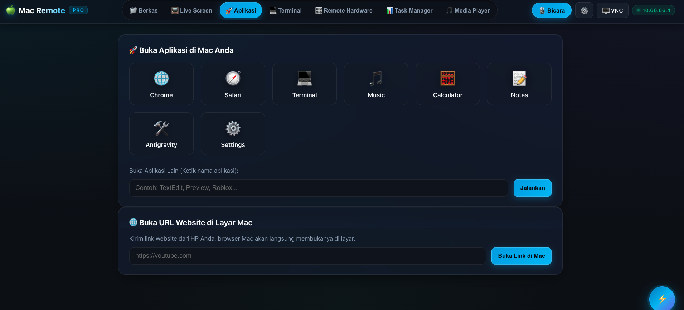
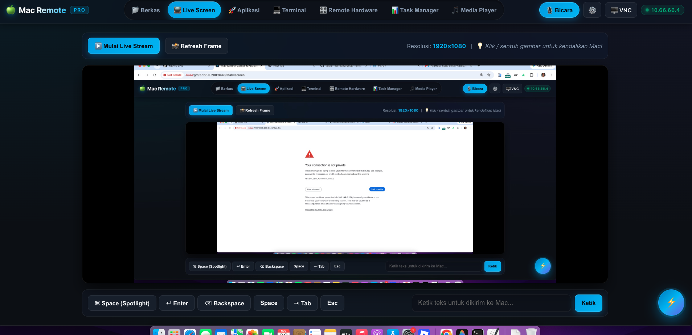

Ubah Mac mini, MacBook, atau iMac lama Anda menjadi server *always-on* 24/7. Mengorkestrasi siaran Google Home,
Android TV Stick, Google Assistant, dan Telegram Bot dalam antarmuka Liquid Glass yang memukau.
Teknologi dengan Detak Jantung: Jarak
Hanyalah Angka Saat Rumah Selalu Mendengar
Bekerja jauh dari keluarga menuntut sebuah cara untuk tetap hadir tanpa harus selalu ada secara fisik. Selama
ini, komunikasi jarak jauh sering kali tereduksi menjadi sekadar dering teks dingin di layar ponsel—pesan
WhatsApp yang mudah tenggelam di antara tumpukan notifikasi grup, atau panggilan telepon yang kerap tak
terangkat saat anak-anak sedang asyik bermain dan istri sedang sibuk di dapur tanpa menggenggam gawai. Ada
kerinduan mendalam untuk menyapa ruang keluarga secara nyata: menyemangati sarapan pagi anak, mengingatkan
waktu sholat dan istirahat, hingga menyiarkan kehangatan seorang ayah langsung ke tengah rumah.
📢
Kehadiran Akustik
Nyata
Gelombang suara bel harmonis dan sapaan lembut di Google Home ruang tengah menciptakan atmosfer kehadiran
fisik. Anak-anak tidak perlu memegang gawai untuk merasakan perhatian orang tuanya.
🔒
Kedaulatan Privasi
Penuh
Tanpa langganan cloud pihak ketiga dan tanpa risiko kebocoran data. Seluruh interaksi, rekaman suara, dan
jadwal keluarga terenkripsi peer-to-peer melalui terowongan aman WireGuard VPN.
🍃
Nyawa Kedua Hardware
Mac mini yang hening bekerja 24/7 dengan konsumsi daya idle ~6 Watt. Bukan sekadar komputer lawas,
melainkan konduktor cerdas yang menyatukan Google Cast, Android TV, dan CoreAudio.
“Pada akhirnya, proyek ini bukan tentang baris kode atau benchmark latensi. Ini tentang cinta seorang
ayah dan suami yang melintasi ratusan kilometer—memastikan bahwa sejauh apa pun jarak memisahkan, keluarga di
rumah selalu merasa didengar, dijaga, dan ditemani setiap hari.”
Arsitektur Modular
Fitur Kelas Pro dalam Tampilan Liquid
Dirancang dengan prinsip desain Apple: presisi, elegan, dan fungsional tanpa kompromi.
⚡
Quick Action Broadcast & Auto-Restore
Sistem siaran suara instan ke Google Home dengan bel harmonis sintetis (Intro: E5-G5-C6, Outro:
G5-E5-C5). Secara otomatis menaikkan volume speaker ke 70% saat pengumuman berlangsung, lalu
mengembalikan volume secara presisi ke level awal saat siaran usai.
📢
Static-First Cast
Kecepatan casting <1ms tanpa delay pemindaian Wi-Fi 254 IP. Langsung tersambung ke Google Home & TV Stick
Mi via soket TLS persisten.
Latency: < 0.8 ms
🤖
Telegram Remote Bot
Kendalikan server dari mana saja melalui bot Telegram @Subuh_macBot. Tangkap screenshot
(/screen), pantau proses, dan siarkan Voice Note.
🧠
Assistant Cloud SDK
Kirim instruksi Google Assistant via teks API gRPC tanpa speaker fisik mendengar. Balasan audio diputar
otomatis di Google Home.
🎮
Android TV Remote v2
Remote kontrol TV Stick Mi via protokol TLS Port 6466. Navigasi D-Pad virtual, pengatur volume, power, dan
deep-link aplikasi TV.
📁
Kodbox-Style Web Explorer
Kelola penyimpanan file Mac dari smartphone atau laptop dengan fitur streaming video tanpa buffer (HTTP Range
206) dan ekstraksi arsip ZIP.
🛡️
WireGuard VPN & Zero-Trust
Akses jarak jauh tanpa membuka celah port publik di router Wi-Fi Anda. Terenkripsi kuat end-to-end dengan
sertifikat X.509 SSL lokal.
Galeri Visual
10 Modul Antarmuka Dashboard
Klik tangkapan layar untuk melihat detail antarmuka dalam resolusi penuh.
1. 📁 File Explorer Web
Akses berkas, upload multi-file, dan streaming video instan.
2. 📢📺 Cast & Assistant Hub
Siaran ke Google Home, TV Stick Mi, dan input perintah Assistant.
3. 🎛️ Live Audio Monitor
Pantau status audio real-time dan tombol darurat Stop All.
4. 🎵🎬 Pustaka Media SQLite
Koleksi musik & video dengan 1-klik casting ke seluruh ruangan.
5. ⏰ Jadwal Suara & Pengingat Cerdas
Pengingat TTS/Audio dengan fitur edit instan, kontrol volume presisi, dan auto-restore.
6. 📊 Mac Task Manager
Pantau penggunaan CPU, RAM, disk, dan kontrol aplikasi Mac.
7. ⚡ Skenario & Clipboard Sync
Otomatisasi makro dan sinkronisasi clipboard dua arah.
8. 💻 Web Terminal Mac
Eksekusi perintah zsh/bash langsung melalui browser secara aman.

9. 🚀 Peluncur Aplikasi Fisik
Buka Chrome, Safari, atau URL di layar monitor Mac mini.

10. 📺 Live Screen & VNC
Pantau tampilan desktop Mac via Apple Screen Sharing.
Arsitektur Berlapis
🏗️Arsitektur Berlapis Sistem
🖐️ Geser / Drag untuk navigasi
100%
flowchart TD
subgraph ClientLayer ["1. Lapisan Klien & Antarmuka"]
WebUI["Web Dashboard PWA (Mobile & Desktop Responsive)"]
TeleClient["Aplikasi Telegram (Smartphone / Desktop)"]
VNCClient["VNC Viewer / Apple Screen Sharing"]
end
subgraph NetworkLayer ["2. Lapisan Jaringan & Keamanan"]
WG["WireGuard VPN Tunnel (Akses Aman Luar Rumah)"]
LAN["Jaringan Lokal Wi-Fi / Ethernet (Subnet 192.168.0.x)"]
SSL["Enkripsi TLS/SSL (HTTPS Port 8443)"]
end
subgraph CoreServer ["3. Lapisan Server & Engine Utama (Mac mini)"]
HTTPServer["HTTPS Web Server (server.py :8443)"]
CastServer["Media Streaming Server (HTTP 206 Partial Content :8080)"]
BotEngine["Telegram Bot Engine (telegram_bot.py)"]
QAEngine["Quick Action & Broadcast Engine (quick_action_runner.py)"]
ScheduleEngine["Smart Reminders Daemon (smart_reminders.py)"]
DB[("Database SQLite WAL database.db")]
end
subgraph AudioEngine ["4. Mesin Sintesis Suara & Audio (CoreAudio)"]
TTS["Edge TTS & macOS say (Indonesian Voice: Gadis/Ardi)"]
ChimeGen["Algorithmic Chime Generator (Intro E5-G5-C6 + Outro G5-E5-C5)"]
Afconvert["Apple afconvert CLI (Stereo 48kHz AAC .m4a)"]
end
subgraph DeviceLayer ["5. Lapisan Perangkat Cerdas & Integrasi IoT"]
GH["Google Home / Nest Speaker (Cast Audio & Auto-Volume)"]
TVStick["Xiaomi TV Stick Mi (Android TV Cast & Remote v2)"]
MacLocal["Speaker & Layar Fisik Mac (CoreAudio afplay & AppleScript)"]
GA["Google Assistant Cloud SDK (Embedded Assistant v1alpha2)"]
end
ClientLayer --> NetworkLayer
NetworkLayer --> CoreServer
CoreServer --> AudioEngine
AudioEngine --> CoreServer
CoreServer --- DB
CoreServer --> DeviceLayer
Jaringan & Keamanan
Topologi: Akses Lokal vs Jarak Jauh
Pemisahan jalur akses aman luar rumah via WireGuard & Telegram dengan intranet lokal LAN 192.168.0.***.
🖐️ Geser / Drag untuk navigasi
100%
🌐🌐 ZONA PUBLIK / AKSES JARAK JAUH (Luar Rumah)
Subnet: 10.xx.xx.***
Koneksi aman melalui jaringan seluler 4G/5G
📱
📱 Smartphone / Laptop User
Cellular 4G/5G
Di luar rumah / luar kota mengakses server
🛡️
🛡️ WireGuard VPN Tunnel
10.xx.xx.***
Terowongan enkripsi Zero-Trust point-to-point
💬
💬 Aplikasi Telegram
@Subuh_macBot
Chatbot interaktif via bot @Subuh_macBot
⬇️ Terowongan VPN UDP Terenkripsi (Zero-Trust)⬇️ Perintah Suara & Chat via HTTPS TLS
☁️☁️ INTERNET GATEWAY & CLOUD RELAY
TLS / Zero-Exposure
Jembatan publik perantara transmisi data aman
☁️
☁️ Telegram Cloud Bot API
api.telegram.org:443
Relay pesan aman (HTTPS Outbound Polling)
🌐
🌐 Router Wi-Fi Gateway Rumah
192.168.0.***
NAT, DHCP Server & Firewall Perlindungan
⬇️ Routing Paket Internal ke IP Server🔄 Long-Polling HTTPS Tanpa Buka Port Publik
🏡🏡 ZONA LOKAL RUMAH (Subnet: 192.168.0.***)
LAN: 192.168.0.***WG: 10.xx.xx.***
Jaringan privat berkecepatan tinggi tanpa paparan internet terbuka
🍎
🍎 Mac mini Server (Otak Kendali Utama 24/7)
Menjalankan seluruh microservice kendali, streaming audio AAC, dan otomasi rumah.
LAN: 192.168.0.***WG: 10.xx.xx.***
🌐 HTTPS Web DashboardPort :8443 (TLS)
📻 Media Streaming ServerPort :8080 (Range 206)
🤖 Telegram Bot EngineLong-Polling Engine
📡 Cast & TV ControllerTCP :8009 & TLS :6466
📢
📢 Google Home Speaker
192.168.0.***:8009
Ruang Keluarga (Audio Bel & Suara Pengumuman)
📺
📺 Xiaomi TV Stick Mi
192.168.0.***:8009/6466
Android TV (Cast Media Video & Remote Control TLS)
🔊
🔊 Speaker Fisik Mac mini
Internal CoreAudio
Output Suara Native afplay & Notifikasi Dialog
💻
📱 Perangkat Keluarga
192.168.0.***
Laptop & Ponsel di rumah (Akses Web Dashboard)
flowchart TD
classDef remoteZone fill:#1e1b4b,stroke:#818cf8,stroke-width:2px,color:#e0e7ff;
classDef publicCloud fill:#0f172a,stroke:#38bdf8,stroke-width:2px,color:#38bdf8;
classDef lanZone fill:#064e3b,stroke:#34d399,stroke-width:2px,color:#ecfdf5;
classDef serverNode fill:#1e293b,stroke:#f59e0b,stroke-width:3px,color:#fef3c7;
classDef deviceNode fill:#1e293b,stroke:#ec4899,stroke-width:2px,color:#fdf2f8;
subgraph RemoteAccess ["🌐 ZONA PUBLIK / REMOTE ACCESS (Luar Rumah)"]
UserRemote["📱 Smartphone / Laptop Pengguna (Jaringan Seluler 4G/5G)"]:::remoteZone
WGClient["🛡️ WireGuard VPN Client (Tunnel IP: 10.xx.xx.xxx)"]:::remoteZone
TelegramApp["💬 Aplikasi Telegram (Chat Client @Subuh_macBot)"]:::remoteZone
end
subgraph CloudRelay ["☁️ CLOUD INTERNET & GATEWAY"]
TelegramCloud["☁️ Telegram Cloud Bot API (Enkripsi HTTPS TLS)"]:::publicCloud
HomeRouter["🌐 Router Wi-Fi Gateway Rumah (Gateway IP: 192.168.0.xxx)"]:::publicCloud
end
subgraph HomeLAN ["🏡 ZONA LOKAL RUMAH (Subnet: 192.168.0.xxx)"]
subgraph HostServer ["🍎 Mac mini Server (Otak Kendali Utama)"]
MacMini["Mac mini 24/7 Always-On (LAN: 192.168.0.xxx | WG: 10.xx.xx.xxx)"]:::serverNode
WebHTTPS["HTTPS Web Dashboard (Port :8443)"]
StreamServer["Media HTTP Streaming Server (Range 206 Partial Content :8080)"]
BotDaemon["Telegram Bot Engine (Long-Polling / Updates)"]
CastDaemon["Cast & TV Controller Engine (TCP 8009 & TLS 6466)"]
end
subgraph LocalClients ["📱 Perangkat Keluarga di Rumah"]
FamilyDevices["Laptop / Smartphone Keluarga (Wi-Fi Lokal: 192.168.0.xxx)"]:::lanZone
end
subgraph SmartEndpoints ["📢 Perangkat Target Smart Home"]
GH["📢 Google Home Speaker (Ruang Keluarga - 192.168.0.xxx:8009)"]:::deviceNode
TVStick["📺 Xiaomi TV Stick Mi (Android TV - 192.168.0.xxx:8009/6466)"]:::deviceNode
MacAudio["🔊 Speaker Internal Mac mini (CoreAudio afplay & AppleScript)"]:::deviceNode
end
end
%% Remote Connection Paths
UserRemote -->|"1. Terowongan VPN Terenkripsi"| WGClient
WGClient -->|"Tunnel UDP Aman (Zero-Trust)"| HomeRouter
HomeRouter -->|"Internal Routing"| MacMini
UserRemote -->|"2. Perintah Chat, Suara & Notifikasi"| TelegramApp
TelegramApp -->|"Kirim Pesan"| TelegramCloud
TelegramCloud -->|"Secure Polling (HTTPS Outbound)"| BotDaemon
%% Local Connection Paths
FamilyDevices -->|"Akses Web Langsung (Port 8443)"| WebHTTPS
%% Server Internal Wiring
MacMini --- WebHTTPS
MacMini --- StreamServer
MacMini --- BotDaemon
MacMini --- CastDaemon
%% Kontrol & Streaming ke Perangkat
CastDaemon -->|"Kontrol Cast pychromecast"| GH
CastDaemon -->|"Kontrol Remote TV TLS / ADB"| TVStick
StreamServer -.->|"Streaming Audio MP3/M4A (HTTP 8080)"| GH
StreamServer -.->|"Streaming Media/Video (HTTP 8080)"| TVStick
MacMini -->|"Native afplay & osascript"| MacAudio
Workflow Engine
🔄Alur Kerja Eksekusi & Penyiaran
🖐️ Geser / Drag untuk navigasi
100%
flowchart TD
Start(["Pengguna Memberikan Aksi"]):::startNode
InputChoice{"Pintu Masuk Perintah"}:::decisionNode
Start --> InputChoice
InputChoice -->|"Web Dashboard PWA"| WebAction["Akses via Browser / PWA (Port 8443)"]
InputChoice -->|"Telegram Bot"| TeleAction["Kirim Pesan / Perintah /qa"]
WebAction --> AuthCheck{"Verifikasi Sesi / TLS"}
TeleAction --> WhiteListCheck{"Cek Whitelist Chat ID"}
AuthCheck -->|Valid| Router["Server Dispatcher (server.py)"]
WhiteListCheck -->|Diizinkan| BotRouter["Bot Dispatcher (telegram_bot.py)"]
AuthCheck -->|Tidak Valid| DeniedWeb["Akses Ditolak (401 / 403)"]:::errorNode
WhiteListCheck -->|Ditolak| DeniedTele["Abaikan Pesan"]:::errorNode
BotRouter --> Router
Router --> ActionType{"Jenis Operasi"}:::decisionNode
ActionType -->|"Quick Action / Pengumuman"| QAFlow["Ambil Pengaturan QA (DB SQLite)"]
QAFlow --> VolumeUp["1. Simpan Volume Asal & Naikkan ke 70%"]
VolumeUp --> GenAudio["2. Generate Bel Intro + TTS Suara + Bel Outro"]
GenAudio --> Transcode["3. Transcode ke AAC .m4a (afconvert)"]
Transcode --> StreamCast["4. Stream via HTTP Server (Port 8080) ke Google Home"]
StreamCast --> WaitFinish["5. Tunggu Siaran Selesai"]
WaitFinish --> VolumeRestore["6. Kembalikan Volume ke Asal (50%)"]
ActionType -->|"Google Assistant Command"| GAFlow["Kirim Teks ke gRPC Assistant API"]
GAFlow --> CloudResp["Dapatkan Audio Balasan Google"]
CloudResp --> CastOrTele["Cast Balasan ke Google Home & Balas ke Telegram"]
ActionType -->|"Kendali TV Stick Mi"| TVFlow["Koneksi TLS Port 6466 (AndroidTVRemote2)"]
TVFlow --> ExecKey["Kirim Keycode D-Pad / Power / Volume / Buka App"]
ActionType -->|"File Manager / Pustaka Media"| FileFlow["Stream Video/Audio Range 206 atau Unduh File"]
ActionType -->|"Task Manager / Screen / Terminal"| MacFlow["Jalankan AppleScript / ZSH Command / Screenshot"]
VolumeRestore --> Done(["Selesai / Respon Status Sukses"]):::successNode
CastOrTele --> Done
ExecKey --> Done
FileFlow --> Done
MacFlow --> Done
classDef startNode fill:#2563eb,stroke:#1d4ed8,stroke-width:2px,color:#fff
classDef decisionNode fill:#f59e0b,stroke:#d97706,stroke-width:2px,color:#fff
classDef successNode fill:#10b981,stroke:#059669,stroke-width:2px,color:#fff
classDef errorNode fill:#ef4444,stroke:#dc2626,stroke-width:2px,color:#fff
Stack & Dependensi
Teknologi yang Digunakan
Pondasi software modern yang ringan, stabil, dan ramah memori.
Kategori
Teknologi / Library
Fungsi & Peran dalam Sistem
Bahasa & Runtime
Python 3.10+, Vanilla JS ES6+
Backend multithreaded dan frontend PWA responsif tanpa bloatware.
Server & Streaming
http.server, ssl
HTTPS Server (8443) & HTTP 206 Byte-Range Media Streaming Server (8080).
Cast & Smart Home
pychromecast
Protokol Google Cast v2 (Port 8009) untuk streaming ke Google Home & TV Stick.
Remote Android TV
androidtvremote2
Navigasi D-Pad, kontrol volume, power, dan deep-link aplikasi TV Stick Mi via TLS 6466.
Google Assistant
google-assistant-grpc
Eksekusi perintah asisten pintar terprogram berbasis teks tanpa mikrofon fisik.
Audio Engine
CoreAudio afconvert
Transkoding audio otomatis ke AAC 48kHz Stereo (.m4a) standar Google Home.
Database
SQLite3 (Mode WAL)
Penyimpanan persisten Pustaka Media, Skenario Makro, dan Quick Action.
Jaringan & Keamanan
WireGuard VPN
Akses aman dari luar rumah dengan enkripsi end-to-end tanpa port forwarding.
Otomatisasi Sistem
macOS launchd, osascript
Auto-start service 24/7 dan kontrol sistem fisik macOS (volume, screen, app launcher).
Panduan Ringkas
Instalasi & Menjalankan
Hanya butuh 3 langkah untuk mengaktifkan Mac mini Anda sebagai pusat kendali.
Koleksi inovasi teknologi open-source karya Subuh Kurniawan: mulai dari On-Device AI,
WebAssembly, visualisasi edukasi, hingga integrasi perangkat cerdas.
Browser AI • Private LLM
🤖
On-Device AI
Menjalankan model kecerdasan buatan (LLM) langsung di sisi klien browser (on-device) tanpa server backend.
Menjamin privasi data 100%, tanpa kuota API, dan latensi nol.
Galeri interaktif visualisasi konsep AI modern dan simulasi jaringan syaraf tiruan. Media edukasi visual
untuk memahami algoritma AI secara mendalam dan intuitif.
Implementasi runtime inferensi Language Model berbasis Google LiteRT yang dikompilasi ke WebAssembly (Wasm)
untuk performa eksekusi native di browser dan edge device.
Aplikasi canggih untuk mirroring dan kendali layar perangkat Android via USB atau Wi-Fi dengan latensi
ultra-rendah, dilengkapi peningkatan UI dan kontrol produktivitas.